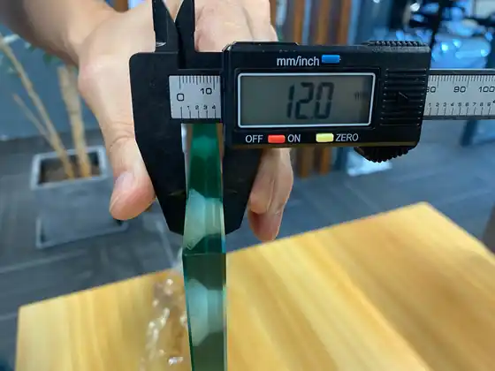

Companies are listed alphabetically, not ranked. Each profile is based on the company’s own published information, federation announcements or industry press, linked in the sources at the end. Figures such as court counts are the companies’ own claims. SPORTENVO is the publisher of this guide.
Padel Court Manufacturers at a Glance
| Company | Base | Known for |
|---|---|---|
| AFP Courts | Barcelona, Spain | Licensed manufacturer of adidas padel courts; pillar, panoramic and competition models |
| MejorSet | Spain | Official FIP court supplier since 2020; Premier Padel courts |
| Padel Galis | Valencia, Spain | Large-scale production and courts for professional tournaments |
| Portico Sport | Spain | Turnkey projects, mobile courts and hurricane-rated models |
| SPORTENVO | Guangzhou, China | Eight commercial court systems with EXW pricing and foundation drawings |
| Sportsfield Specialties | United States | USPA-endorsed court manufacturer and builder for the US market |
AFP Courts
AFP Courts is part of AFP Group and holds the adidas licence for padel courts, alongside its own redsport courts. Its range covers pillar, panoramic and competition courts, and the company also offers turnkey project development, civil-works consulting and certified installation. Industry press reported in 2023 that it was consolidating manufacturing at a single site in Barcelona. It reports customers in more than 50 countries.
MejorSet
MejorSet is a Spanish manufacturer and installer that has been the International Padel Federation’s official court supplier since 2020; FIP renewed the agreement for the 2025 and 2026 seasons. It has supplied courts for FIP World Championships and the 2023 European Games, and is the official court supplier of the Premier Padel tour. FIP has described MejorSet as the first company to develop the full panoramic padel court. It has been part of LEDAP Group since 2021.
Padel Galis
Padel Galis is a Valencia-based manufacturer founded in 2005. The company reports more than 10,000 courts produced, projects in more than 85 countries and over 15,000 m² of production facilities, and has supplied courts for professional events including Premier Padel and the former World Padel Tour. In 2026 it signed a global distribution agreement with Acenta Group.
Portico Sport
Portico Sport is a Spain-based manufacturer and installer offering turnkey projects. It reports more than 4,000 courts installed in 35 countries and a manufacturing facility opened in 2023. Its range includes tournament, panoramic and club models, a patented mobile court that needs no ground anchoring, and a Tournament+ model the company says is engineered for category 5 hurricane winds.
SPORTENVO
SPORTENVO is the publisher of this guide. Based in Guangzhou, China, and founded in 2010, it manufactures eight commercial court systems: Panoramic, Super Panoramic, Classic, Mobile, Electric Tent, Roof, the FORCE-HX anti-hurricane series and a Modular Foundation Base. Courts are CE-certified, quoted EXW with shipping via Nansha Port, and supplied with foundation drawings and installation guidance for local teams. See its project references and padel courts for sale.
Sportsfield Specialties
Sportsfield Specialties is a US company endorsed by the United States Padel Association as a padel court manufacturer and builder. The USPA endorsement programme requires compliance with FIP regulations and US building codes, which makes it a reference point for projects in the United States.
How to Choose a Padel Court Manufacturer
Brand reputation is a starting point, not a specification. Before shortlisting, ask every supplier for:
- the steel section, grade, galvanizing and coating specification;
- glass thickness, tempering and certification documents;
- the wind rating and whether it matches your site;
- foundation and anchor drawings, and who designs the base;
- Incoterms, packing, shipping and installation support;
- warranty terms and references from completed projects.
Use How to Choose a Padel Court Manufacturer for a full checklist, the Padel Court RFQ Checklist to compare quotes on the same basis, and the Padel Court Construction Guide to plan the site works around the supplier you choose.
Padel Court Manufacturers FAQ
Who makes the official FIP padel court?
MejorSet has been the International Padel Federation’s official court supplier since 2020, and FIP renewed the agreement for the 2025 and 2026 seasons.
Are Chinese padel court manufacturers reliable?
Many supply commercial projects worldwide, but quality varies by supplier. Ask for the steel, glass and coating specification, certification documents, foundation drawings and references from completed projects before ordering, as you would with any manufacturer.
Should I buy from a manufacturer or a local padel court builder?
A manufacturer designs and produces the court system; a local builder usually handles civil works and assembly. Many projects combine both, so confirm who is responsible for each work package.
What should I compare between padel court suppliers?
Compare the full specification and scope, not just the price: steel section and galvanizing, glass thickness and certification, turf and lighting, wind rating, foundation drawings, packing, shipping terms, installation support and warranty.
Is this list a ranking?
No. Companies are listed alphabetically and described from public sources. SPORTENVO is the publisher of this guide and is included with that disclosure.
Sources
- FIP: renewal of the MejorSet official court supplier agreement (July 2025)
- FIP: Mejor Set, official padel court of the FIP (March 2023)
- AFP Courts company profile
- SGI Europe: AFP Courts coverage
- Portico Sport company profile
- Acenta Group: distribution agreement with Padel Galis
- USPA: endorsement of Sportsfield Specialties
Company information changes. This guide reflects public sources available in October 2026; confirm current certifications, specifications and terms directly with each supplier. To suggest a correction, contact SPORTENVO through the project form.